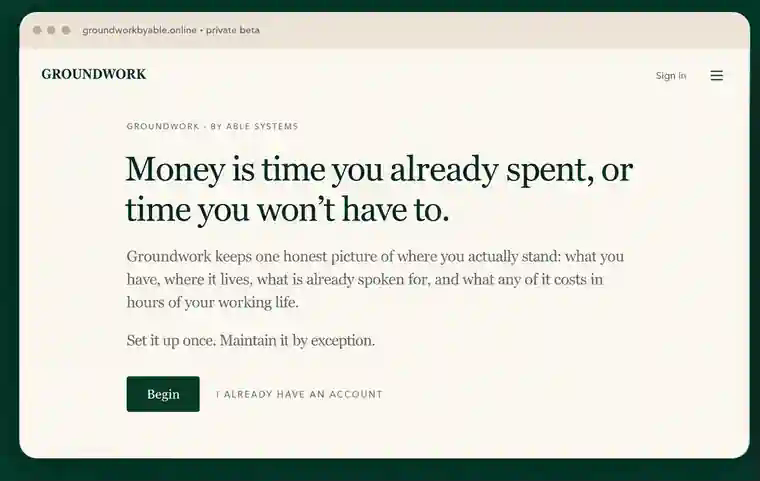
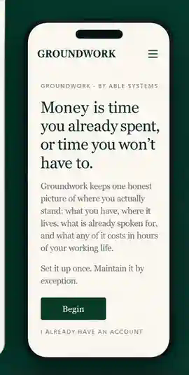

01
Responsibilities
See the recurring commitments and life overhead that your income is expected to carry.
Groundwork is a life operating system that brings responsibilities, income, savings, and working time into one picture—so you can see what your money is already carrying before you ask it to carry more.
Early Access is opening in controlled waves as the private beta grows.
Your responsibilities, income, savings, and working time come together in one place—so you can see what is already committed, what remains available, and what the next decision would really ask of you.


Every responsibility makes a claim on two things at once: your money and the time you exchange to create it. Groundwork keeps both visible, so “Can I afford it?” becomes a better question: “What does carrying this actually require of me?”
The recurring things you carry stop disappearing into a pile of transactions. Groundwork gives them a place in the operating picture.
Hours and minutes sit close to the dollars, keeping the human cost of a decision visible.
Reserves and goals are not just balances. They can protect future working life and create room to move.
Micah feels the paycheck. Stack feels everything it already has to carry.
That is the human side of the same Groundwork idea: money can look available before the responsibilities behind it are visible. The product makes the load measurable. Micah & Stack make it recognizable.
Put one number through Groundwork’s thinking. Translate money into working time, or turn a responsibility into an earning target, in under a minute.
Enter one amount and your hourly pay to see the working time behind it.
Your Groundwork Preview
Working Hours
This simplified preview uses a standard 40-hour weekly schedule. The full Groundwork system is built around your actual operating picture.
Want the full operating picture around this number? Join Early Access. The original Excel tool is also available now on Payhip and Etsy.
See what remains to be earned and what that means per planned earning day.
Your Variable Income Preview
This free preview calculates one responsibility only. The connected Groundwork app is designed to hold the larger operating picture.
Want this calculation connected to the rest of your operating picture? Join Early Access. The original Excel edition is also available now on Payhip and Etsy.
Join the Early Access list. Groundwork is opening the private beta in waves so real people can put the system against real responsibilities, real income patterns, and real decisions before the public release.
The Excel editions remain available on Payhip and Etsy for people who prefer to start with a downloadable Groundwork tool.
Bill-to-Working-Hours and Variable Income tools together in the original Microsoft Excel format.
Plan earning days, required gross income, tax reserves, and changing income in the original downloadable tool.
Translate recurring costs into the hours and minutes of work required to carry them.